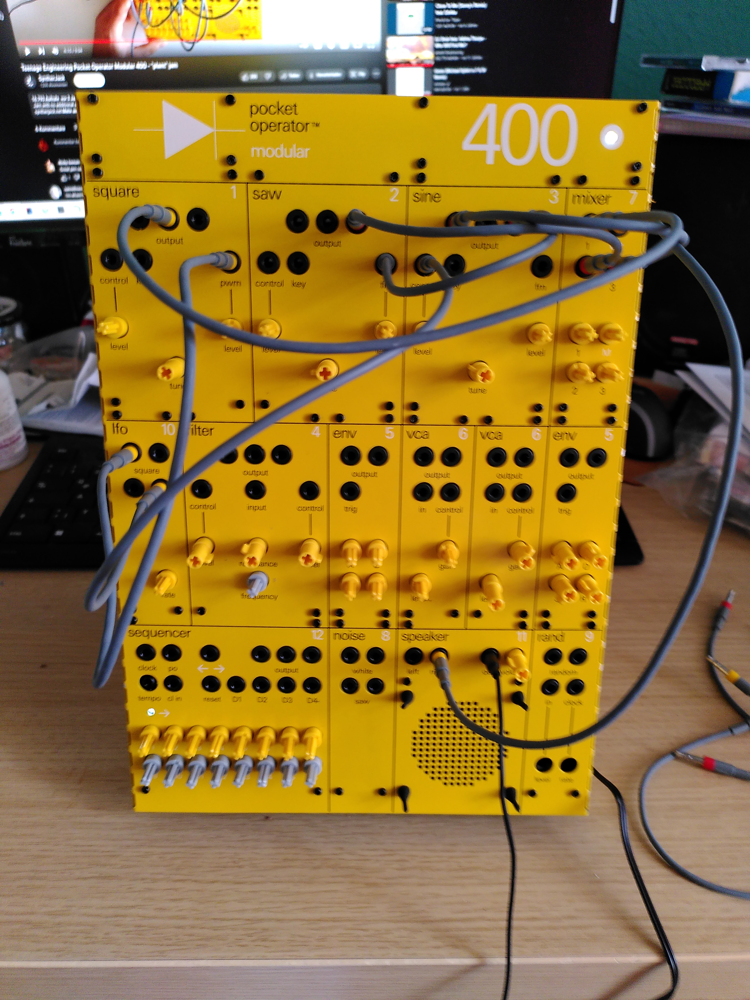
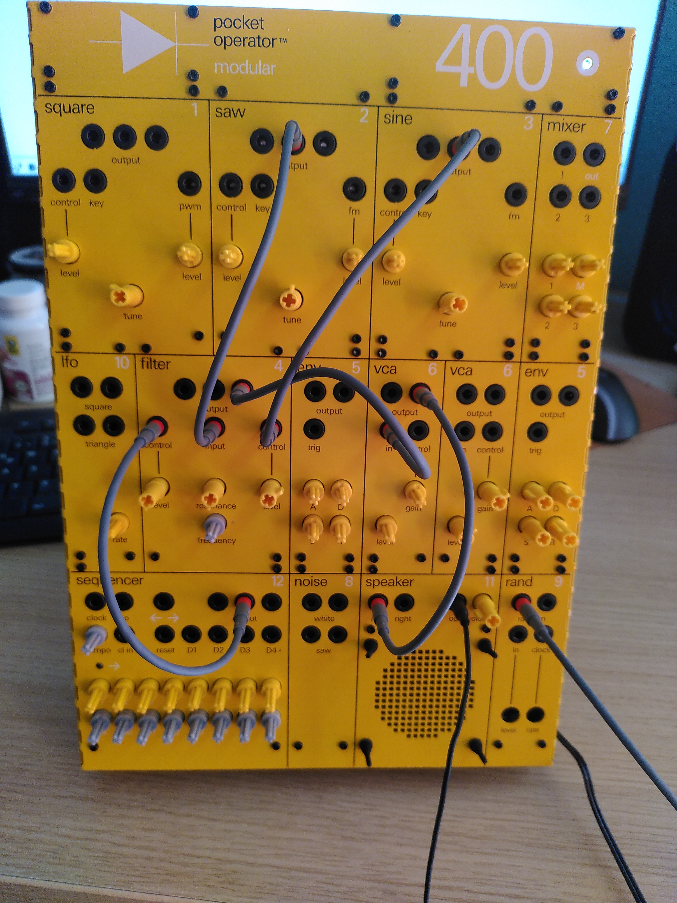
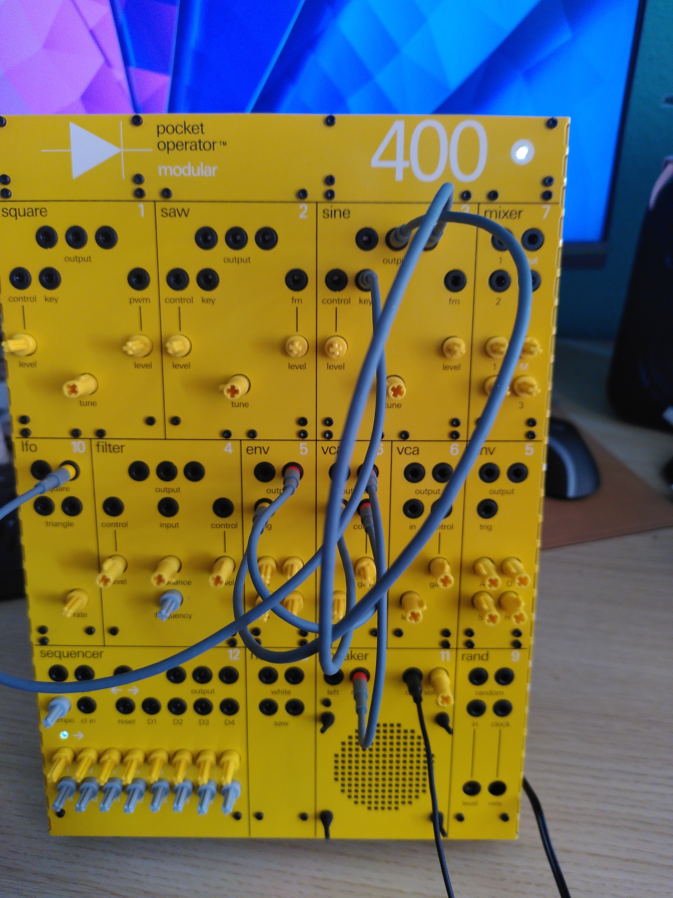
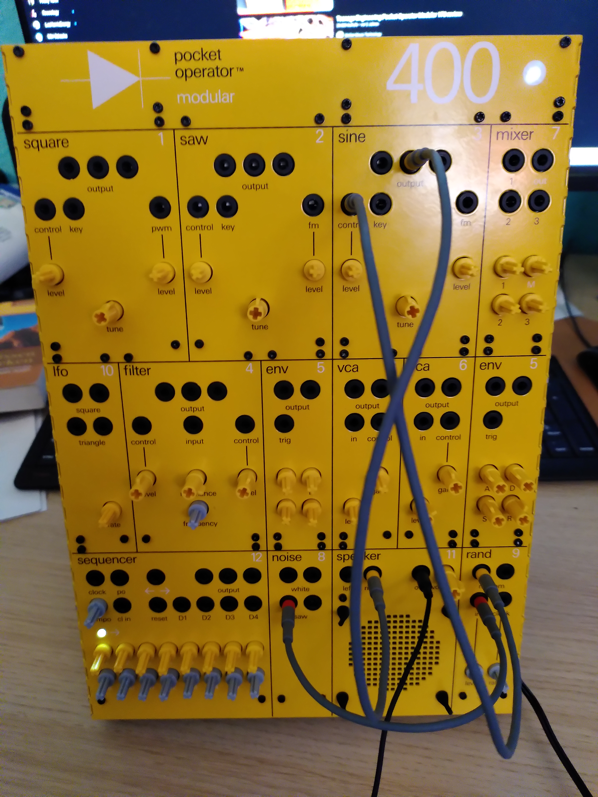
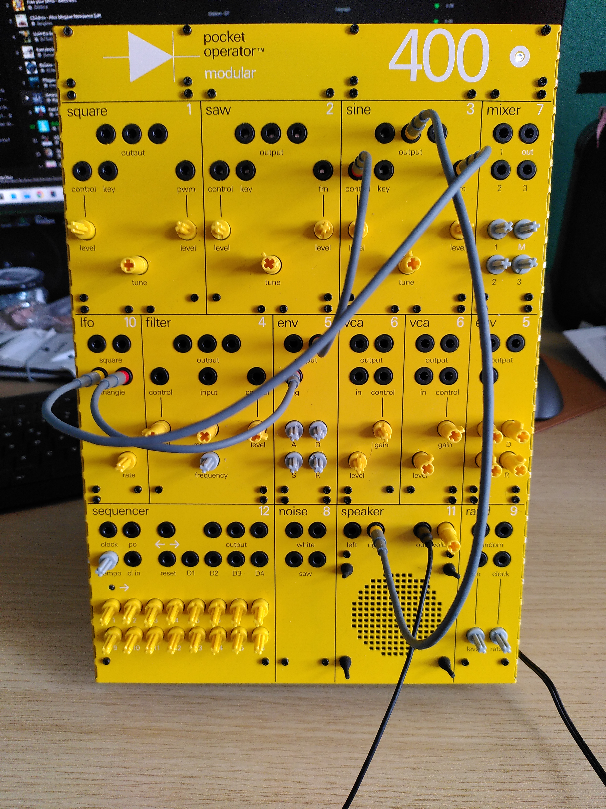

Ein analoger modularer Synthesizer war schon immer mein Traum, letzte Woche habe ich mir diesen Traum erfüllt und den Pocket Operator Modular 400 von der schwedischen Firma Teenage Engineering bestellt. Wie bei den Möbeln der anderen beliebten schwedischen Firma muss man ihn erst selbst zusammenbauen, bevor man damit einen Ton erzeugen kann. Das hat etwa 3 bis 4 Stunden gedauert. Aber es hat sich gelohnt.
Hier sind einige Patch-Ideen. Im ersten Beispiel mischen wir einfach die Ausgänge aller 3 Oszillatoren zusammen und steuern den Sinusoszillator mit dem Dreieckausgang des LFO und die Impulsbreite des Rechteckoszillators mit dem LFO-Rechteck.
-
Mixer-Ausgang → Lautsprecher rechts.
-
Sinus-Ausgang → Mixer 3.
-
Sägezahn-Ausgang → Mixer 2.
-
Rechteck-Ausgang → Mixer 1.
-
Sinus-Ausgang → Sägezahn FM.
-
LFO Dreieck → Sinus-Steuerung.
-
LFO Rechteck → Rechteck-PWM



(Ich entschuldige mich für die schlechte Video- und Tonqualität, die Einrichtung wird verbessert.) Das Schöne an modularen Synthesizern ist, dass sie den traditionellen Signalweg von spannungsgesteuertem Oszillator (VCO), spannungsgesteuertem Filter (VCF) und spannungsgesteuertem Verstärker (VCA) durchbrechen und es ermöglichen, dass die gesamte Kreativität in experimentellen Aufbauten gipfelt.
Mit dem Zufallsmodul können wir ein Signal vom Eingang abtasten und halten. Sein Begleiter ist das Rauschmodul. Wir speisen den Sägezahnausgang in den Eingang des Zufallsmoduls ein.

'''.
Sinus-Ausgang -> Lautsprecher rechts. Hüllkurvenausgang -> Sinustaste. LFO-Rechteck -> Hüllkurven-Trigger. LFO-Rechteck -> Sinus fm

Wir können das Setup erweitern, indem wir den Sequenzer verwenden und den Filter nutzen. Denn das Schöne an modularen Synthesizern ist, dass der Filter nicht nur in Signalpfaden, sondern auch in Steuerpfaden verwendet werden kann ;-) ..
Filterausgang -> Sinussteuerung. Sequenzerausgang -> Filtereingang